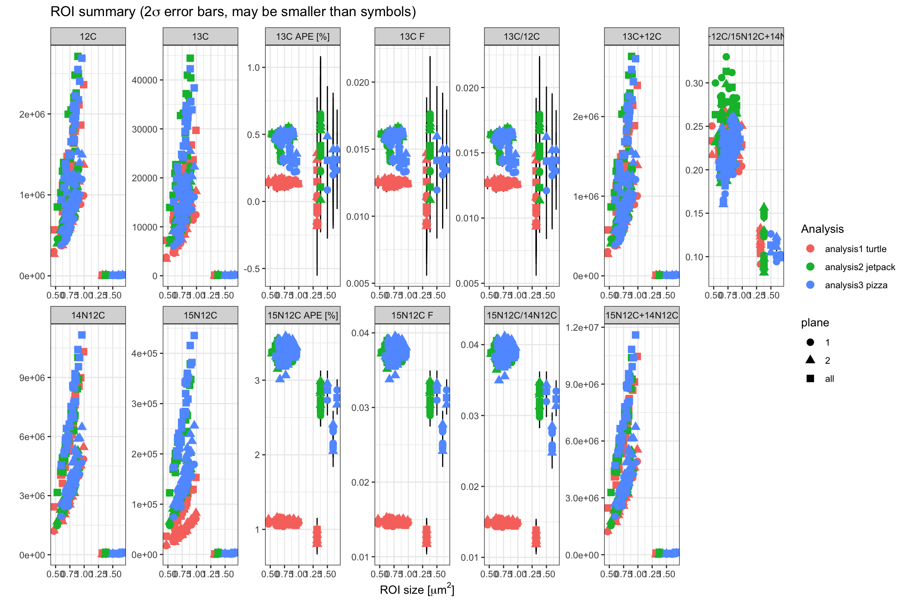
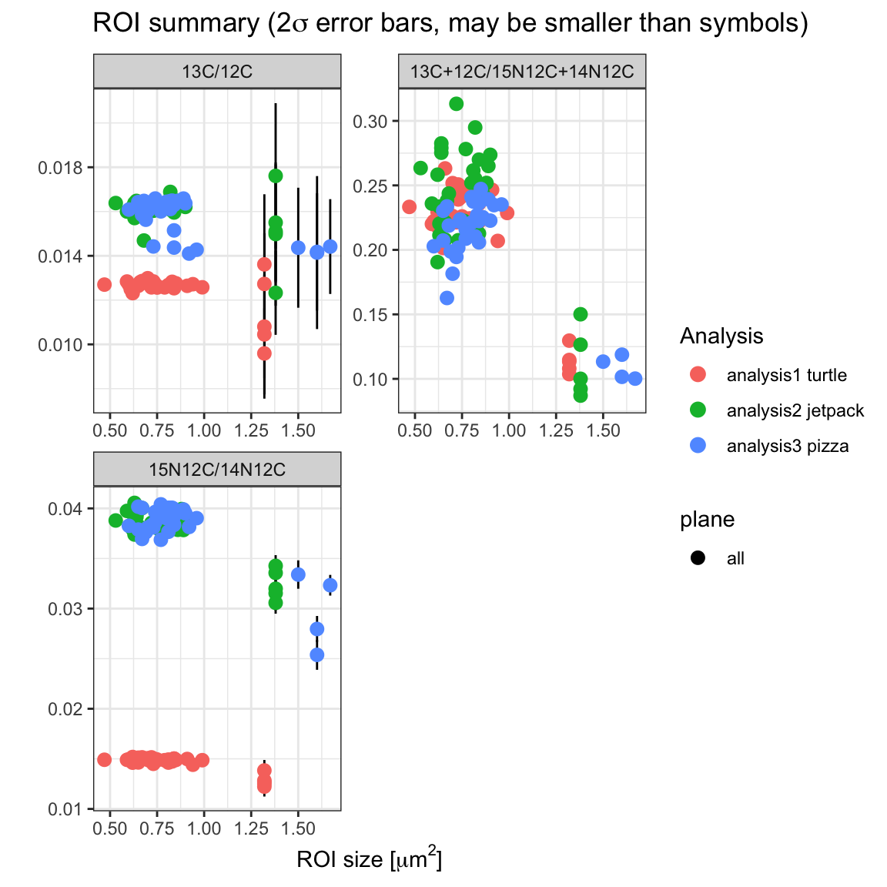
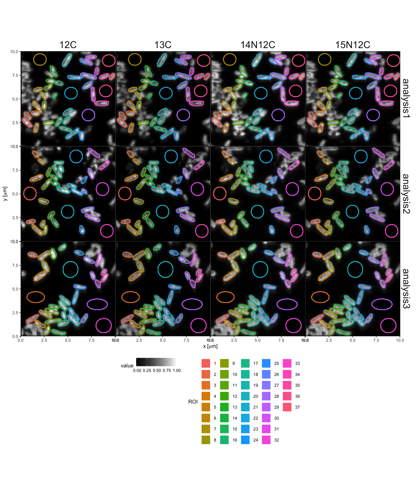
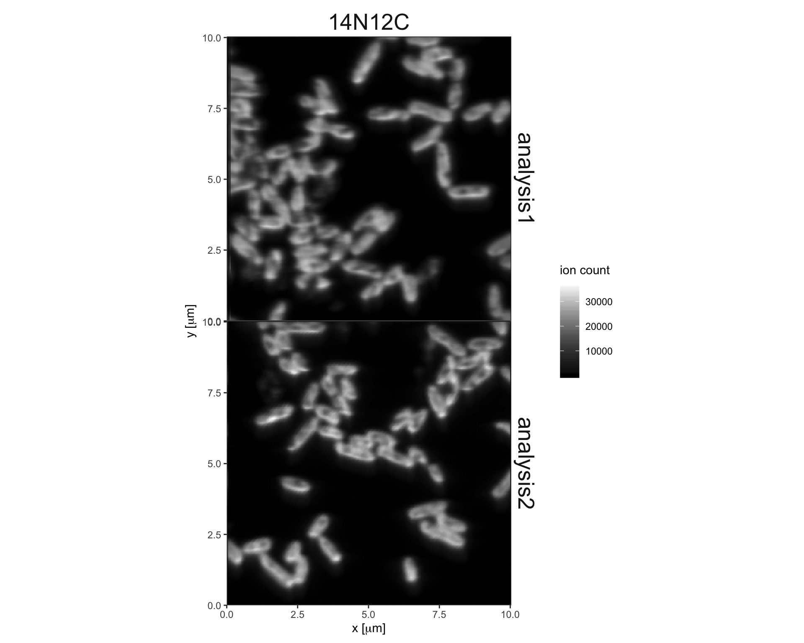

This R markdown example demonstrates the basic functionality of the lans2r package.
To load data into R, export it from LANS which creates a folder for each analysis with sub folders dat containing the aggregated information about the different ROIs (in text file format) and mat containing the raw ion maps (in Matlab file format). Both of these can be imported easily with this package. For easier demonstration lans2r bundles a set of 3 analyses (folders analysis1, analysis2 and analysis3) with the package sources.
library(lans2r)
library(dplyr)
library(knitr)
folder <- system.file("extdata", "nanosims_data", package = "lans2r") # data base directoryThis loads the ROI overview data for the 3 analyses and assigns some additional information to the analyses (here rather random, column info). Since the parameters quiet=F indicates that information messages should be provided, it also outputs a summary of the loaded data.
data <-
load_LANS_summary (
analysis = c("analysis1", "analysis2", "analysis3"), # the analysis folders
base_dir = folder, # the data base director
load_zstacks = TRUE, # whether to load z-stacks as well (have to be exported from LANS!)
info = c("turtle", "jetpack", "pizza"), # any additional information about the analyses
quiet = FALSE # output information about the files
) ## INFO: folder 'analysis1' read successfully.
## Data for 37 ROIs with 4 ions recovered: 12C, 13C, 14N12C, 15N12C.
## Z-stacks were loaded. Recovered 2 planes.## INFO: folder 'analysis2' read successfully.
## Data for 33 ROIs with 4 ions recovered: 12C, 13C, 14N12C, 15N12C.
## Z-stacks were loaded. Recovered 2 planes.## INFO: folder 'analysis3' read successfully.
## Data for 34 ROIs with 4 ions recovered: 12C, 13C, 14N12C, 15N12C.
## Z-stacks were loaded. Recovered 2 planes.To calculate ratios and abundances, simply specificy which ions you would like to ratio. Note: for convenience, we make use of the pipe operator %>% for chaining multiple operations. For more information on the pipe, take a look at the magrittr package.
data <- data %>%
calculate_sums(c(`13C`, `12C`), c(`15N12C`, `14N12C`)) %>%
calculate_ratios(c(`13C`, `12C`), c(`15N12C`, `14N12C`), c(`13C+12C`, `15N12C+14N12C`)) %>%
calculate_abundances(c(`13C`, `12C`), c(`15N12C`, `14N12C`)) ## INFO: 624 'ion_sum' values + errors calculated, 624 added (subset: all)
## values added (stored in 'variable' column): '13C+12C' (312x), '15N12C+14N12C' (312x)## INFO: 936 'ratio' values + errors calculated, 936 added (subset: all)
## values added (stored in 'variable' column): '13C/12C' (312x), '13C+12C/15N12C+14N12C' (312x), '15N12C/14N12C' (312x)## INFO: 624 'abundance' values + errors calculated, 624 added (subset: all)
## values added (stored in 'variable' column): '13C F' (312x), '15N12C F' (312x)For additional operations, one can use the more generic calculate function and provide custom functions for value and error calculations and name construction. Here, we have APE (atom percent enrichment) as an example. For additional examples on calculate, see the vignette("lans2r-calculate").
data <- data %>%
mutate(F13C_natural = 1.11/100, F15N_natural = 0.366/100) %>%
calculate(
data_type = "APE",
c(`13C F`, `F13C_natural`, `13C F sigma`),
c(`15N12C F`, `F15N_natural`, `15N12C F sigma`),
# calculate the APE value as the fractional abundance enrichment above natural
value_fun = function(val, nat, sigma) 100*(val - nat),
# assume the error in natural abundance is negligible so only F error propagates
error_fun = function(val, nat, sigma) 100*sigma,
# replace the F in the existing columnes with APE to make the new variable
name_fun = function(val, ...) sub("F", "APE [%]", deparse(substitute(val)))
)## INFO: 624 'APE' values + errors calculated, 624 added (subset: all)
## values added (stored in 'variable' column): '13C APE [%]' (312x), '15N12C APE [%]' (312x)Let’s take a look at the first couple of rows of the data frame.
| analysis | info | plane | ROI | data_type | variable | value | sigma | coord_x | coord_y | size | pixels | LW_ratio | F13C_natural | F15N_natural |
|---|---|---|---|---|---|---|---|---|---|---|---|---|---|---|
| analysis1 | turtle | all | 1 | ion_count | 12C | 1895850 | 1376.89869 | 17.38 | 192.93 | 0.83 | 353 | 2.45 | 0.0111 | 0.00366 |
| analysis1 | turtle | all | 2 | ion_count | 12C | 1273919 | 1128.68020 | 18.39 | 175.25 | 0.75 | 290 | 1.57 | 0.0111 | 0.00366 |
| analysis1 | turtle | all | 3 | ion_count | 12C | 1315417 | 1146.91630 | 40.38 | 168.26 | 0.70 | 250 | 1.66 | 0.0111 | 0.00366 |
| analysis1 | turtle | all | 4 | ion_count | 12C | 1289955 | 1135.76186 | 42.05 | 207.80 | 0.72 | 267 | 2.16 | 0.0111 | 0.00366 |
| analysis1 | turtle | all | 5 | ion_count | 12C | 1756159 | 1325.20149 | 42.92 | 147.66 | 0.81 | 334 | 2.50 | 0.0111 | 0.00366 |
| analysis1 | turtle | all | 6 | ion_count | 12C | 1023934 | 1011.89624 | 46.56 | 103.93 | 0.67 | 232 | 2.11 | 0.0111 | 0.00366 |
| analysis1 | turtle | all | 7 | ion_count | 12C | 5509 | 74.22264 | 52.29 | 22.77 | 1.32 | 893 | 1.09 | 0.0111 | 0.00366 |
| analysis1 | turtle | all | 8 | ion_count | 12C | 1117870 | 1057.29372 | 61.77 | 120.06 | 0.62 | 195 | 2.39 | 0.0111 | 0.00366 |
| analysis1 | turtle | all | 9 | ion_count | 12C | 1122839 | 1059.64098 | 63.38 | 146.02 | 0.65 | 217 | 2.02 | 0.0111 | 0.00366 |
| analysis1 | turtle | all | 10 | ion_count | 12C | 1046665 | 1023.06647 | 74.39 | 98.29 | 0.66 | 221 | 2.23 | 0.0111 | 0.00366 |
Since this is now in long format so it’s easy to have both value and the sigma error, it’s hard to see line by line what is going on, let’s look just at analysis1 and recast the values into a wide format using the spread_data function.
| analysis | info | plane | ROI | coord_x | coord_y | size | pixels | LW_ratio | F13C_natural | F15N_natural | 12C | 13C | 13C APE [%] | 13C F | 13C/12C | 13C+12C | 13C+12C/15N12C+14N12C | 14N12C | 15N12C | 15N12C APE [%] | 15N12C F | 15N12C/14N12C | 15N12C+14N12C | 12C sigma | 13C APE [%] sigma | 13C F sigma | 13C sigma | 13C/12C sigma | 13C+12C sigma | 13C+12C/15N12C+14N12C sigma | 14N12C sigma | 15N12C APE [%] sigma | 15N12C F sigma | 15N12C sigma | 15N12C/14N12C sigma | 15N12C+14N12C sigma |
|---|---|---|---|---|---|---|---|---|---|---|---|---|---|---|---|---|---|---|---|---|---|---|---|---|---|---|---|---|---|---|---|---|---|---|---|---|
| analysis1 | turtle | all | 1 | 17.38 | 192.93 | 0.83 | 353 | 2.45 | 0.0111 | 0.00366 | 1895850 | 24315 | 0.1562974 | 0.0126630 | 0.0128254 | 1920165 | 0.2413707 | 7839685 | 115568 | 1.0867256 | 0.0145273 | 0.0147414 | 7955253 | 1376.89869 | 0.0080692 | 0.0000807 | 155.932678 | 0.0000828 | 1385.70018 | 0.0001941 | 2799.9437 | 0.0042422 | 0.0000424 | 339.95294 | 0.0000437 | 2820.5058 |
| analysis1 | turtle | all | 2 | 18.39 | 175.25 | 0.75 | 290 | 1.57 | 0.0111 | 0.00366 | 1273919 | 16087 | 0.1370485 | 0.0124705 | 0.0126280 | 1290006 | 0.2259213 | 5625982 | 83997 | 1.1050562 | 0.0147106 | 0.0149302 | 5709979 | 1128.68020 | 0.0097706 | 0.0000977 | 126.834538 | 0.0001002 | 1135.78431 | 0.0002202 | 2371.9153 | 0.0050382 | 0.0000504 | 289.82236 | 0.0000519 | 2389.5562 |
| analysis1 | turtle | all | 3 | 40.38 | 168.26 | 0.70 | 250 | 1.66 | 0.0111 | 0.00366 | 1315417 | 17084 | 0.1721004 | 0.0128210 | 0.0129875 | 1332501 | 0.2262195 | 5802914 | 87388 | 1.1175912 | 0.0148359 | 0.0150593 | 5890302 | 1146.91630 | 0.0097460 | 0.0000975 | 130.705777 | 0.0001000 | 1154.34007 | 0.0002170 | 2408.9238 | 0.0049813 | 0.0000498 | 295.61461 | 0.0000513 | 2426.9944 |
| analysis1 | turtle | all | 4 | 42.05 | 207.80 | 0.72 | 267 | 2.16 | 0.0111 | 0.00366 | 1289955 | 16221 | 0.1318694 | 0.0124187 | 0.0125749 | 1306176 | 0.2229323 | 5773380 | 85690 | 1.0965188 | 0.0146252 | 0.0148423 | 5859070 | 1135.76186 | 0.0096900 | 0.0000969 | 127.361690 | 0.0000994 | 1142.88057 | 0.0002157 | 2402.7859 | 0.0049595 | 0.0000496 | 292.72854 | 0.0000511 | 2420.5516 |
| analysis1 | turtle | all | 5 | 42.92 | 147.66 | 0.81 | 334 | 2.50 | 0.0111 | 0.00366 | 1756159 | 22267 | 0.1420622 | 0.0125206 | 0.0126794 | 1778426 | 0.2427387 | 7218762 | 107741 | 1.1045652 | 0.0147057 | 0.0149251 | 7326503 | 1325.20149 | 0.0083379 | 0.0000834 | 149.221312 | 0.0000855 | 1333.57639 | 0.0002029 | 2686.7754 | 0.0044471 | 0.0000445 | 328.23924 | 0.0000458 | 2706.7514 |
| analysis1 | turtle | all | 6 | 46.56 | 103.93 | 0.67 | 232 | 2.11 | 0.0111 | 0.00366 | 1023934 | 13166 | 0.1595015 | 0.0126950 | 0.0128583 | 1037100 | 0.2303558 | 4434979 | 67186 | 1.1263043 | 0.0149230 | 0.0151491 | 4502165 | 1011.89624 | 0.0109934 | 0.0001099 | 114.743191 | 0.0001128 | 1018.38107 | 0.0002509 | 2105.9390 | 0.0057142 | 0.0000571 | 259.20262 | 0.0000589 | 2121.8306 |
| analysis1 | turtle | all | 7 | 52.29 | 22.77 | 1.32 | 893 | 1.09 | 0.0111 | 0.00366 | 5509 | 75 | 0.2331232 | 0.0134312 | 0.0136141 | 5584 | 0.1079555 | 51019 | 706 | 0.9989106 | 0.0136491 | 0.0138380 | 51725 | 74.22264 | 0.1540455 | 0.0015405 | 8.660254 | 0.0015827 | 74.72617 | 0.0015207 | 225.8739 | 0.0510173 | 0.0005102 | 26.57066 | 0.0005244 | 227.4313 |
| analysis1 | turtle | all | 8 | 61.77 | 120.06 | 0.62 | 195 | 2.39 | 0.0111 | 0.00366 | 1117870 | 13971 | 0.1243607 | 0.0123436 | 0.0124979 | 1131841 | 0.2294823 | 4858391 | 73758 | 1.1294536 | 0.0149545 | 0.0151816 | 4932149 | 1057.29372 | 0.0103784 | 0.0001038 | 118.198985 | 0.0001064 | 1063.88016 | 0.0002392 | 2204.1758 | 0.0054651 | 0.0000547 | 271.58424 | 0.0000563 | 2220.8442 |
| analysis1 | turtle | all | 9 | 63.38 | 146.02 | 0.65 | 217 | 2.02 | 0.0111 | 0.00366 | 1122839 | 14201 | 0.1389446 | 0.0124894 | 0.0126474 | 1137040 | 0.2325619 | 4818643 | 70550 | 1.0769784 | 0.0144298 | 0.0146411 | 4889193 | 1059.64098 | 0.0104149 | 0.0001041 | 119.167949 | 0.0001068 | 1066.32078 | 0.0002421 | 2195.1408 | 0.0053933 | 0.0000539 | 265.61250 | 0.0000555 | 2211.1520 |
| analysis1 | turtle | all | 10 | 74.39 | 98.29 | 0.66 | 221 | 2.23 | 0.0111 | 0.00366 | 1046665 | 13408 | 0.1548186 | 0.0126482 | 0.0128102 | 1060073 | 0.2328937 | 4484536 | 67210 | 1.1105762 | 0.0147658 | 0.0149871 | 4551746 | 1023.06647 | 0.0108538 | 0.0001085 | 115.792919 | 0.0001113 | 1029.59847 | 0.0002512 | 2117.6723 | 0.0056534 | 0.0000565 | 259.24892 | 0.0000582 | 2133.4821 |
Or for more specific overviews, for example, only the abundance and APE, only the data values (excluding the errors) and only the first plane of the first few ROIs
data %>% filter(data_type %in% c("abundance", "APE"), plane == "1", ROI < 4) %>%
spread_data(errors = FALSE) %>% kable()| analysis | info | plane | ROI | coord_x | coord_y | size | pixels | LW_ratio | F13C_natural | F15N_natural | 13C APE [%] | 13C F | 15N12C APE [%] | 15N12C F |
|---|---|---|---|---|---|---|---|---|---|---|---|---|---|---|
| analysis1 | turtle | 1 | 1 | 17.38 | 192.93 | 0.83 | 353 | 2.45 | 0.0111 | 0.00366 | 0.1645876 | 0.0127459 | 1.058593 | 0.0142459 |
| analysis1 | turtle | 1 | 2 | 18.39 | 175.25 | 0.75 | 290 | 1.57 | 0.0111 | 0.00366 | 0.1446352 | 0.0125464 | 1.090331 | 0.0145633 |
| analysis1 | turtle | 1 | 3 | 40.38 | 168.26 | 0.70 | 250 | 1.66 | 0.0111 | 0.00366 | 0.1711441 | 0.0128114 | 1.092983 | 0.0145898 |
| analysis2 | jetpack | 1 | 1 | 25.28 | 128.10 | 1.38 | 976 | 1.04 | 0.0111 | 0.00366 | 0.2299359 | 0.0133994 | 2.633973 | 0.0299997 |
| analysis2 | jetpack | 1 | 2 | 28.10 | 203.98 | 0.66 | 221 | 2.29 | 0.0111 | 0.00366 | 0.5019285 | 0.0161193 | 3.283767 | 0.0364977 |
| analysis2 | jetpack | 1 | 3 | 40.89 | 21.97 | 0.66 | 225 | 1.73 | 0.0111 | 0.00366 | 0.4311799 | 0.0154118 | 3.361709 | 0.0372771 |
| analysis3 | pizza | 1 | 1 | 31.42 | 209.93 | 0.82 | 348 | 3.32 | 0.0111 | 0.00366 | 0.4568719 | 0.0156687 | 3.324170 | 0.0369017 |
| analysis3 | pizza | 1 | 2 | 32.36 | 37.12 | 0.73 | 276 | 1.89 | 0.0111 | 0.00366 | 0.2947689 | 0.0140477 | 3.316543 | 0.0368254 |
| analysis3 | pizza | 1 | 3 | 40.78 | 151.29 | 1.50 | 1158 | 1.55 | 0.0111 | 0.00366 | 0.0854406 | 0.0119544 | 2.731920 | 0.0309792 |
Plot all the data using the ggplot package.
library(ggplot2)
data %>%
ggplot() +
aes(size, value, color = paste(analysis, info), shape = plane) +
geom_errorbar(aes(ymin = value - 2*sigma, ymax = value + 2*sigma), colour="black", width = 0) +
geom_point(size=3) +
labs(x = expression("ROI size ["*mu*"m"^2*"]"), y="",
title = expression("ROI summary (2"*sigma*" error bars, may be smaller than symbols)"),
color = "Analysis") +
facet_wrap(~variable, scales="free", nrow = 2) +
theme_bw()
Focus in on the combined counts (not the individual planes from the z-stack) and look just at ratios:

Again, loading the ion maps for all 3 analyses.
## INFO: folder 'analysis1' read successfully.
## Ion map data for 256 x 256 pixel frame (10.014 microm^2) for 4 ions recovered: 12C, 13C, 14N12C, 15N12C.
## 37 ROIs identified in the frame.## INFO: folder 'analysis2' read successfully.
## Ion map data for 256 x 256 pixel frame (10.014 microm^2) for 4 ions recovered: 12C, 13C, 14N12C, 15N12C.
## 33 ROIs identified in the frame.## INFO: folder 'analysis3' read successfully.
## Ion map data for 256 x 256 pixel frame (10.014 microm^2) for 4 ions recovered: 12C, 13C, 14N12C, 15N12C.
## 34 ROIs identified in the frame.The data in these looks similar to the summary data frame except that it is broken out pixel by pixel:
| analysis | x.px | y.px | frame_size.px | x.um | y.um | frame_size.um | variable | data_type | value | sigma | ROI |
|---|---|---|---|---|---|---|---|---|---|---|---|
| analysis1 | 1 | 1 | 256 | 0.0391172 | 0.0391172 | 10.014 | 12C | ion_count | 1721 | 41.48494 | 0 |
| analysis1 | 1 | 2 | 256 | 0.0391172 | 0.0782344 | 10.014 | 12C | ion_count | 1694 | 41.15823 | 0 |
| analysis1 | 1 | 3 | 256 | 0.0391172 | 0.1173516 | 10.014 | 12C | ion_count | 1508 | 38.83298 | 0 |
| analysis1 | 1 | 4 | 256 | 0.0391172 | 0.1564688 | 10.014 | 12C | ion_count | 1297 | 36.01389 | 0 |
| analysis1 | 1 | 5 | 256 | 0.0391172 | 0.1955859 | 10.014 | 12C | ion_count | 1136 | 33.70460 | 0 |
| analysis1 | 1 | 6 | 256 | 0.0391172 | 0.2347031 | 10.014 | 12C | ion_count | 786 | 28.03569 | 0 |
| analysis1 | 1 | 7 | 256 | 0.0391172 | 0.2738203 | 10.014 | 12C | ion_count | 702 | 26.49528 | 0 |
| analysis1 | 1 | 8 | 256 | 0.0391172 | 0.3129375 | 10.014 | 12C | ion_count | 453 | 21.28380 | 0 |
| analysis1 | 1 | 9 | 256 | 0.0391172 | 0.3520547 | 10.014 | 12C | ion_count | 319 | 17.86057 | 0 |
| analysis1 | 1 | 10 | 256 | 0.0391172 | 0.3911719 | 10.014 | 12C | ion_count | 220 | 14.83240 | 0 |
To make it easier to plot these kind of maps, lans2r provides a convenience functoin plot_maps but of course this could be adjusted as needed (look at the source code to see how this one is made). By default ion counts are normalized for each ion so they can be visualized on the same scale.

Focusing in on just one ion, we can ditch the normalization, and let’s also not draw ROIs for a direct look. Also, because it’s a ggplot, all ggplot modifications of the plot are fair game.
plot_maps(maps %>% filter(variable == "14N12C", analysis %in% c("analysis1", "analysis2")),
normalize = FALSE, draw_ROIs = FALSE) +
theme(legend.position = "right") + labs(fill = "ion count")
Note that for plotting maps, lans2r does not (yet) support any smoothing so although the plot_maps function theoretically supports plotting ratios and abundances as well (which can be calculated from the maps data the same way using calculate_ratios and calculate_abundances), in practice this does not work so well because individual pixels often have extreme values offsetting proper scaling. This might be part of future expansions if the package sees a lot of use so please email with suggestions if you find it helpful.